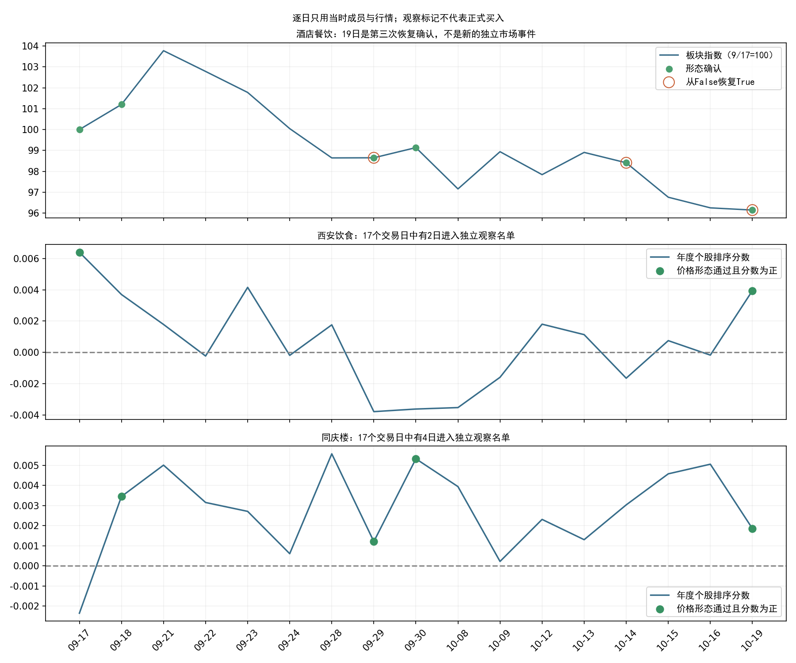
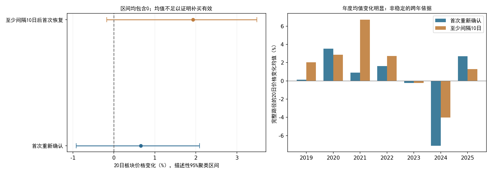

结论：新增证据不足以将西安饮食、同庆楼从独立观察名单升级为正式买入候选。19日是旧事件第三次恢复确认；重复确认的历史价格表现不够稳定，个股在该场景下的排序收益仍未验证。
研究整理于北京时间2026-10-20凌晨，使用的最新完整行情为10月19日。没有20日收盘数据，也没有将19日数据换日期冒充新行情。原始市场日历与上交所休市安排一致。本次没有修改数据工程程序、正式策略参数、年度模型权重或原机会扫描候选。
| 日期 | 距首次确认交易日 | 状态 | 西安饮食 | 同庆楼 |
|---|---|---|---|---|
| 2026-09-17 | 0 | 首次确认、板块模型拒绝 | 进入观察（0.006399） | 未入选（-0.002354） |
| 2026-09-29 | 7 | 第1次恢复确认 | 未入选（-0.003787） | 进入观察（0.001212） |
| 2026-10-14 | 13 | 第2次恢复确认 | 未入选（-0.001649） | 未入选（0.003036） |
| 2026-10-19 | 16 | 第3次恢复确认 | 进入观察（0.003943） | 进入观察（0.001857） |
9月17日至10月19日共17个交易日，19日距首次确认16个交易日。9月18日、9月30日虽然也保持确认，但分别是前一日的连续状态，不另计恢复次数。酒店餐饮本轮峰值仍为9月8日，首次确认年度板块分数-0.009877低于0.003289阈值。
同庆楼在9月29日已进入过独立观察名单；西安饮食在9月17日也曾满足个股条件。这些都是以对应日期全部合格板块成员重算的结果，不使用未来收益挑选股票。两只当前股票的展示属于19日观察名单的回顾，不是预先固定股票组合的业绩检验。

复用五个窗口原状态机，核对256个既有年度已评分首次事件，记录499次确认恢复、涉及185个原事件。主分析每个原事件仅保留第一次恢复，避免同一行情重复计数。各年度的训练标签均早于年初和隔离截止日；没有重训模型。
下面只展示原年度板块模型拒绝组，历史2019—2025与2026监测分开。
价格观察口径：恢复确认后的下一交易日收盘作为观察起点，再过3/10/20个交易日的自算板块指数收盘变化。该指数不可直接成交，表中数字不是个股收益、可成交回测收益或账户收益；没有扣成本，也没有证明相对市场的超额。
| 口径 | 观察日数 | 事件数 | 完整路径 | 缺失路径 | 时间簇 | 平均价格变化 | 上涨比例 | 最差价格变化 | 描述性95%区间 |
|---|---|---|---|---|---|---|---|---|---|
| 首次恢复 | 3 | 108 | 107 | 1 | 16 | 0.36% | 55.14% | -7.45% | -0.21%～0.88% |
| 首次恢复 | 10 | 108 | 93 | 15 | 16 | 0.30% | 48.39% | -10.82% | -0.20%～1.19% |
| 首次恢复 | 20 | 108 | 92 | 16 | 15 | 0.66% | 53.26% | -21.39% | -0.92%～2.09% |
| 间隔至少10日 | 3 | 78 | 78 | 0 | 15 | 0.43% | 57.69% | -6.39% | -0.57%～1.12% |
| 间隔至少10日 | 10 | 78 | 77 | 1 | 14 | 0.11% | 50.65% | -10.82% | -0.85%～1.59% |
| 间隔至少10日 | 20 | 78 | 77 | 1 | 14 | 1.93% | 59.74% | -11.38% | -0.18%～3.49% |
主口径20日观察有108个事件，其中92个路径完整、16个因报价/连续段问题不可比较。完整路径来自15个时间簇；均值+0.66%，95%描述性聚类区间约-0.92%至+2.09%，不能排除平均变化为零。缺失事件若统一按0变化计，均值约0.56%；若假设其均为-20%的压力情景，整体均值为-2.40%。后者是假设压力测试，不是估计的实际损失。
更接近当前较晚时点的“间隔至少10个交易日后首次恢复”是由本轮问题提出的补充口径：78个事件，77个完整，14个时间簇，20日均值+1.93%，区间约-0.18%至+3.49%，同样包含0。它不能因均值更高就替换主口径，也不能直接代表第三次恢复确认。
年份差异明显：主口径20日平均变化在2020年约+3.53%，2024年约-7.10%；2023、2024连续为负。2026年拒绝组主口径只有5个事件，20日仅4个完整；至少间隔10日口径只有4个事件、3个完整，无法单凭这年的小样本定新规则。

逐日板块状态 · 全部成员逐日评分 · 关键日期 · 全部恢复事件 · 逐事件价格观察 · 年度结果 · 区间与压力情景 · 运行前口径
复现：在项目根目录顺序运行本目录replay.py、通过frozen_research.py run --release datahub/releases/selection_live_20261019_eod运行stock_timeline.py，随后运行uncertainty.py、report.py。